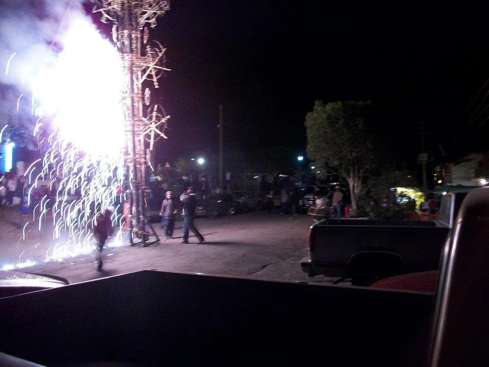
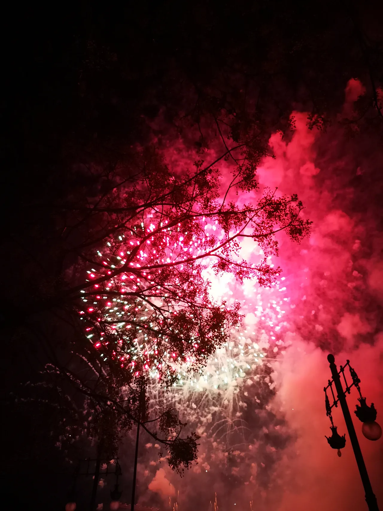

En el atrio de la iglesia del pueblo, un maestro cohetero y sus muchachos levantan una torre de veinte metros de caña y pólvora que arderá en diez minutos de éxtasis colectivo. Una indagación sobre el castillo pirotécnico, la alquimia del fuego artesanal y la fiesta sagrada en el corazón de México.
Octavio Paz escribió en las páginas inmortales de El laberinto de la soledad que el mexicano es un hombre que gasta en una sola noche de fiesta patronal los ahorros de todo un año de fatigas, arrojando al viento su pobreza para comulgar con la muerte, el derroche y la belleza fulgurante del instante. En ningún artefacto material de nuestra cultura popular se manifiesta esa verdad con tanta fuerza y dramatismo como en un castillo de pirotecnia tradicional levantado en el atrio de una iglesia de Oaxaca, de Puebla, de Tlaxcala o del Estado de México. Construir un castillo exige semanas enteras de trabajo minucioso en talleres campesinos donde el olor a azufre y carbón de sauce impregna la ropa de los artesanos; y sin embargo, toda esa arquitectura de cañas y cordeles está condenada a extinguirse en menos de doce minutos de combustión frenética bajo el aplauso emocionado de miles de almas.

El esqueleto de esta maravilla efímera es el carrizo, esa caña silvestre y hueca que crece en los márgenes de los arroyos y que los artesanos cortan durante la luna menguante para que no se apolille. Con el carrizo no se hacen paredes sólidas sino celosías ligeras y flexibles: varas atadas entre sí con mecate de ixtle de maguey o tiras de alambre recocido, formando módulos cuadrados que se ensamblan unos sobre otros hasta erigir una torre vertical que a menudo supera los veinticinco metros de altura. Sobre esa armazón aérea los coheteros montan los mecanismos cinéticos: ruedas concéntricas, aspas giratorias, coronas de luces y figuras en relieve de santos patrones, palomas de la paz o estrellas solares que habrán de encenderse y girar mediante el empuje de la pólvora.
El corazón de la técnica reside en la alquimia de los polvos pirotécnicos, un conocimiento empírico y peligroso que se transmite en riguroso secreto de padres a hijos en poblados famosos como Tultepec. El maestro pirotécnico mezcla en bateas de madera —jamás de hierro ni de plástico para evitar la más mínima chispa por fricción o estática— el salitre purificado, el azufre amarillo molido y el carbón vegetal tamizado finamente. A esa base explosiva se le añaden las sales minerales que darán color a la llama: el estroncio para el rojo bermellón, el bario para el verde esmeralda, el sodio para el amarillo solar, el cobre para el azul cielo y las limaduras de titanio o magnesio para esa cascada de chispas plateadas que ciega la mirada con su fulgor diamantino.
Con esa pólvora se rellenan a mano miles de pequeños tubos de cartón grueso enrollado sobre varillas de metal y apretados con mazos de madera dura. Están los veneros o fuentes de chispas, que proporcionan luz inmóvil; los propulsores o motores, que disparan un chorro de gas presurizado por una tobera estrecha para hacer girar las ruedas mecánicas; y las guías o mechas de tiempo, cordones de algodón empapados en pasta de pólvora y forrados en papel encerado que conducen el fuego de un nivel a otro del castillo con la precisión de un relojero.
La quema del castillo es una ópera visual y acústica en varios actos que paraliza a la comunidad entera. A las once de la noche, cuando la banda de viento calla y las campanas de la torre parroquial dejan de repicar, el maestro cohetero se acerca a la base de la estructura y enciende la mecha maestra con la brasa de su cigarrillo. Un silbido agudo perfora el aire y una serpiente de chispas correteando por el carrizo enciende el primer cuerpo inferior: dos ruedas gemelas empiezan a girar en sentidos opuestos arrojando coronas de fuego verde y amarillo que bañan las fachadas coloniales en un resplandor alucinante.

El fuego va ascendiendo piso por piso con una coreografía perfecta. Se apaga una rueda y estalla inmediatamente la siguiente; giran figuras geométricas que parecen soles precolombinos en movimiento; silban los petardos de advertencia y caen cortinas de chispas doradas que obligan al público congregado a retroceder entre risas y gritos de asombro, cubriéndose la cabeza con el rebozo o el sombrero de paja para protegerse de las cenizas humeantes. La plaza entera huele a pólvora quemada, ese aroma mineral y arcaico que en la memoria popular evoca la presencia viva de los dioses y la expulsión de las sombras que acechan al pueblo.
El clímax de la ceremonia llega con el remate superior, la llamada corona celestial o el torito volador. Cuando la mecha alcanza la cúspide de la torre a veinticinco metros del suelo, se liberan los amarres de la última pieza y una corona gigante cargada de propulsores de alta potencia sale disparada hacia el cielo nocturno girando a velocidad endiablada, elevándose cincuenta metros sobre el campanario de la iglesia antes de estallar en una lluvia final de luces multicolores que ilumina la llanura entera antes de disolverse en el silencio de la noche.
En ese instante final, cuando el castillo queda reducido a un esqueleto negro de cañas carbonizadas que humean en la oscuridad del atrio, la multitud exhala un suspiro colectivo de plenitud y catarsis. El dinero del pueblo se ha consumido en el aire; mañana habrá que volver al arado, a la sequía y a la dureza del jornal campesino. Pero durante doce minutos, los hombres y mujeres que levantaron esa torre con sus propias manos demostraron que la vida no es una contabilidad mezquina de ganancias materiales, sino una llamarada sagrada capaz de desafiar la noche con la belleza invencible de su propio fuego.
Fuentes.
- Paz, Octavio (1950). El laberinto de la soledad: Todos Santos, Día de Muertos. Cuadernos Americanos.
- García Canclini, Néstor (1990). Culturas híbridas: Tradición y modernidad en las fiestas populares. Grijalbo.
- Stavenhagen, Rodolfo (1988). Derecho consuetudinario y fiesta indígena en México. Instituto Indigenista Interamericano.
Investigación sobre pirotecnia artesanal, ritualidad festiva y cultura material mexicana.
Fuentes consultadas el 19.11.2026. Análisis e interpretación: RUMMOR. Edición privada para revisión.